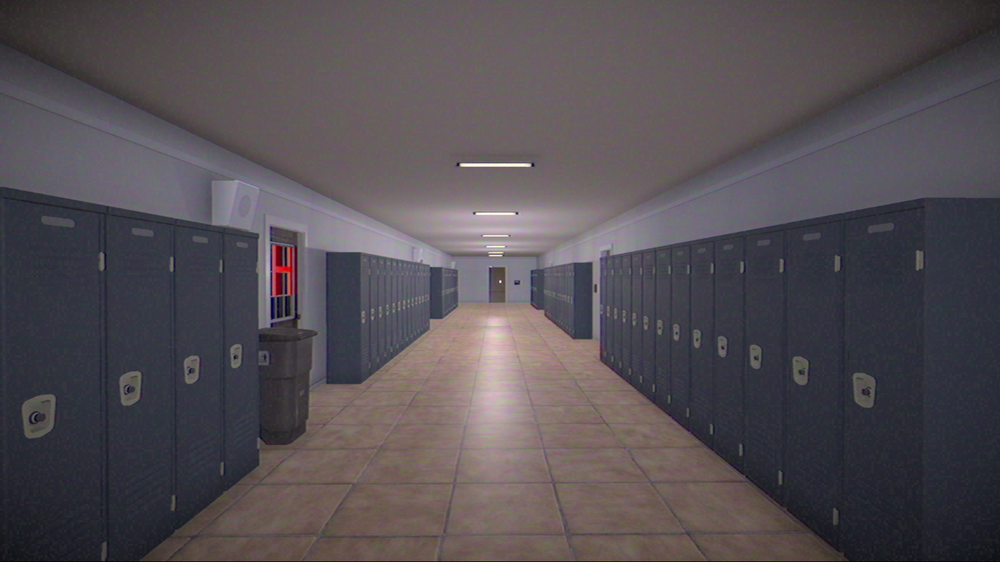
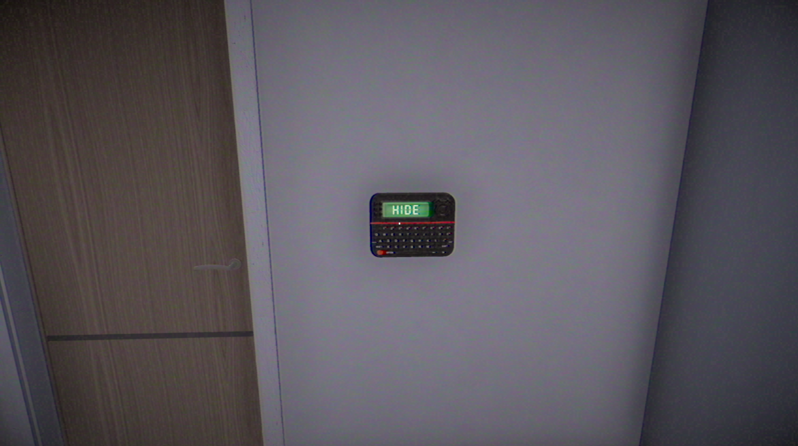
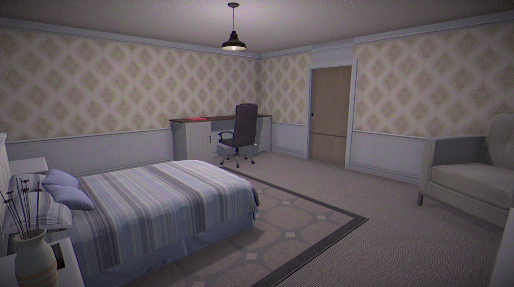

Développement de Perception, un jeu narratif psychologique court réalisé en 48 heures, proposant une expérience immersive autour des traumatismes, de l’isolement et de la perception cognitive. 5ᵉ place à la Global Game Jam Tunisia 2026.


